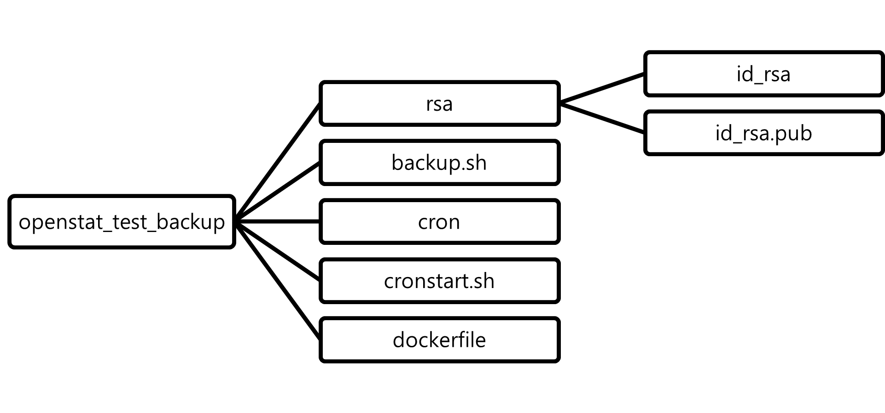
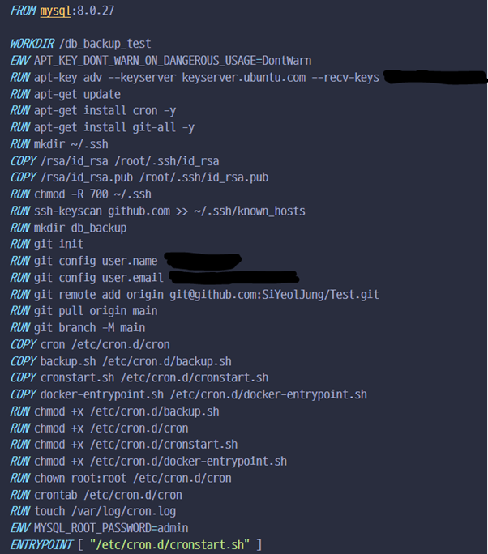

숭실대학교 인턴십 프로그램을 통하여 참여한 차라투에서 인턴으로 활동하며 3주차 동안 학습한 내용에 대해 공유합니다.
목표
MySQL 기반 DockerContainer에서 GitHub-Repository로의 주기적인 DB 백업 구현
목차
- SSH-key 생성 및 GitHub 등록
- Dockerfile 작성
- CronFile 및 Shell File 작성
SSH-Key 생성 및 GitHub 등록
GitHub Repository에 SSH를 통한 접근 인증을 위해서는 SSH Public Key 생성 및 등록 과정을 걸쳐야 합니다.
SSH-Key 생성
ssh-keygen -t rsa

생성된 key는 인증키(private key)의 경우 ‘/.ssh/id_rsa’에 저장되어 있고 공개 키(public key)는’/.ssh/id_rsa.pub’로 저장되어 있습니다. 저희는 공개키를 사용하기에 공개키를 복사해주세요.
cat ~/.ssh/id_rsa.pub위 명령어를 실행하면 공개키가 출력되는 모습을 확인하실 수 있습니다. 이제 GitHub로 이동하겠습니다.
GitHub 등록


본인 GitHub계정에 로그인한 이후 Settings → SSH and GPG keys → new SSH key에 복사한 SSH Key를 붙여주면 됩니다. Title은 임의로 정하셔도 상관없습니다. SSH-Key 등록 이후 본격적인 진행에 앞서 앞으로의 코드에 이해를 돕고자 현재 작업하고 있는 로컬 디렉토리의 계층도를 안내하겠습니다.

DockerFile 작성
DockerContainer를 DockerFile을 통해 만들도록 하겠습니다. 코드의 전문은 아래와 같습니다.

FROM mysql:8.0.27생성되는 컨테이너는 MYSQL:8.0.27 이미지를 바탕으로 한다는 내용의 코드입니다
RUN apt-get update
RUN apt-get install cron -y
RUN apt-get install git-all -y 생성되는 컨테이너에 주기적인 백업을 위한 Cron, Git 명령어 수행을 위한 Git을 설치하는 코드입니다.
RUN mkdir ~/.ssh
COPY /rsa/id_rsa /root/.ssh/id_rsa
COPY /rsa/id_rsa.pub /root/.ssh/id_rsa.pub앞서 생성한 SSH-key를 컨테이너에서 활용 가능하도록 컨테이너 생성시 .ssh폴더를 생성한 뒤 해당 키 값들을 복사하여 생성하는 코드입니다.
COPY cron /etc/cron.d/cron
COPY backup.sh /etc/cron.d/backup.sh
COPY cronstart.sh /etc/cron.d/cronstart.sh 로컬에 있는 cron, backup.sh, cronstart.sh 파일들을 복사하여 컨테이너 생성시 해당 디렉토리에 넣는 코드입니다.해당 파일의 내용은 아래에서 살펴보도록 하겠습니다.
CronFile 및 Shell File작성
CronFile 작성

앞서 컨테이너의 /etc/cron.d/cron에 복사한 cron파일입니다.
Cron을 작동시키는 시간을 맞추기 위해서 TZ = Asia/Seoul를 설정하여 현재 서울의 시간대와 일치시켰습니다.
* * * * * /etc/cron.d/backup.sh >> /var/log/cron.log 2>&1매분 마다 /etc/cron.d/backup.sh 파일을 작동시키고, 해당 파일의 작동 결과를 /var/log/cron.log 파일에 기록할 수 있도록 설정하였습니다. Backup.sh의 내용은 아래에서 살펴보겠습니다.
(Cron 설정에 관련해서는 임의로 설정하셔도 상관없습니다.)
Shell 파일 작성

앞서 Cron 설정으로 일정주기 마다 실행되는 Backup.sh 파일입니다. mysqldump를 활용해서 test db를 백업한 내용을 “$FileDir/$YmdH”.sql에 저장하고 이후 Git으로 Push를 진행해준다.
여기까지cron을 활용하여 GitHub에 주기적으로 백업을 진행하는 내용의 코드는 완성되었습니다. 이에 더하여 컨테이너를 실행하면 cron이 자동으로 시작되는 기능을 추가하겠습니다.
앞선 DockerFile에서 다음과 같은 코드를 확인할 수 있습니다.
ENTRYPOINT ["/etc/cron.d/cronstart.sh"]ENTRYPOINT는 컨테이너가 시작되었을때 스크립트 혹은 명령을 실행합니다. 위 코드에서는 /etc/cron.d/cronstart.sh 파일을 실행하는 것입니다. /etc/cron.d/cronstart.sh 파일의 내용은 아래에서 확인하겠습니다.
cronstart.sh
#!/bin/bash
service cron start
bash /usr/local/bin/docker-entrypoint.sh mysqld컨테이너가 시작되면 service cron start로 cron을 시작합니다. 이후 bash /usr/local/bin/docker-entrypoint.sh 파일에 mysqld 인자를 넘기며 실행시켜 해당 컨테이너에 mysqld를 작동시킵니다.
dockerfile을 활용하여 컨테이너를 구축하고 실제로 작동이 잘되는지 확인해보도록 하겠습니다.
docker build -t test .
docker run -i --name test test

컨테이너 생성과 동시에 정상적으로 DB 백업이 이루어지는 것을 확인할 수 있습니다.
결론
DB의 내용을 GitHub에 주기적으로 백업하는 방식에 대해 알아보았습니다. DB의 내용을 주기적으로 자동으로 백업이 가능하다는 유의미한 결과를 보이기는 하지만 코드상 DB의 암호가 노출된다는 점 등을 미루어 보았을 때 취약점이 존재하는것 같습니다. 개선된 방향으로의 학습이 필요할것 같습니다.
Citation
@online{jung2022,
author = {Jung, Siyeol},
title = {인턴십 - {DB} {자동} {백업을} {위한} {Docker} {및} {Github}
{활용}},
date = {2022-01-20},
url = {https://blog.zarathu.com/en/posts/2022-01-20-dbbackup/},
langid = {en}
}